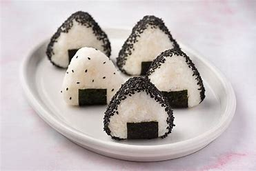
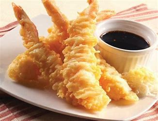

Miso Soup
Ingredients: Miso Paste, Tofu, Seaweed, Dashi
Preparation Steps:
- Heat dashi broth and dissolve miso paste.
- Add tofu and seaweed, simmer for 5 minutes.
- Avoid boiling to preserve flavor.
- Serve warm.

Onigiri
Ingredients: Rice, Seaweed, Tuna, Salt
Preparation Steps:
- Season cooked rice with salt.
- Shape into triangles with tuna filling.
- Wrap with nori strips.
- Serve as a snack.
Sashimi
Ingredients: Fresh Fish, Soy Sauce, Wasabi, Ginger
Preparation Steps:
- Slice fresh fish into thin pieces.
- Arrange on a plate with soy sauce.
- Serve with wasabi and ginger on the side.

Tempura
Ingredients: Shrimp, Flour, Egg, Ice Water
Preparation Steps:
- Mix flour, egg, and ice water for batter.
- Dip shrimp in batter and fry until crispy.
- Serve with tempura sauce.

Udon
Ingredients: Udon Noodles, Dashi, Soy Sauce, Tempura
Preparation Steps:
- Boil udon noodles until tender.
- Heat dashi broth with soy sauce.
- Add noodles and top with tempura.
- Serve hot.
Yakitori
Ingredients: Chicken, Soy Sauce, Mirin, Skewers
Preparation Steps:
- Marinate chicken in soy sauce and mirin.
- Skewer and grill until charred.
- Brush with sauce while cooking.
- Serve with rice.